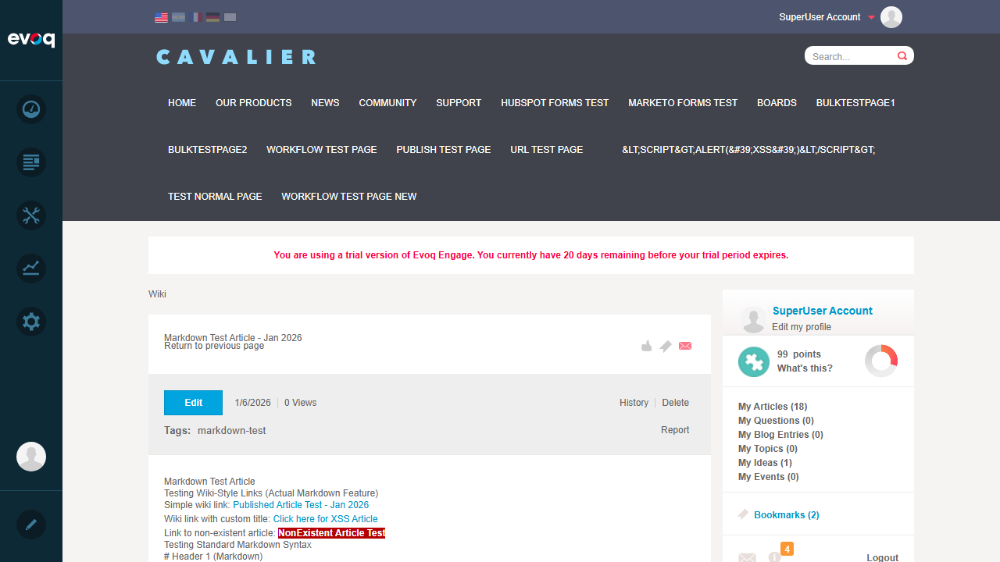
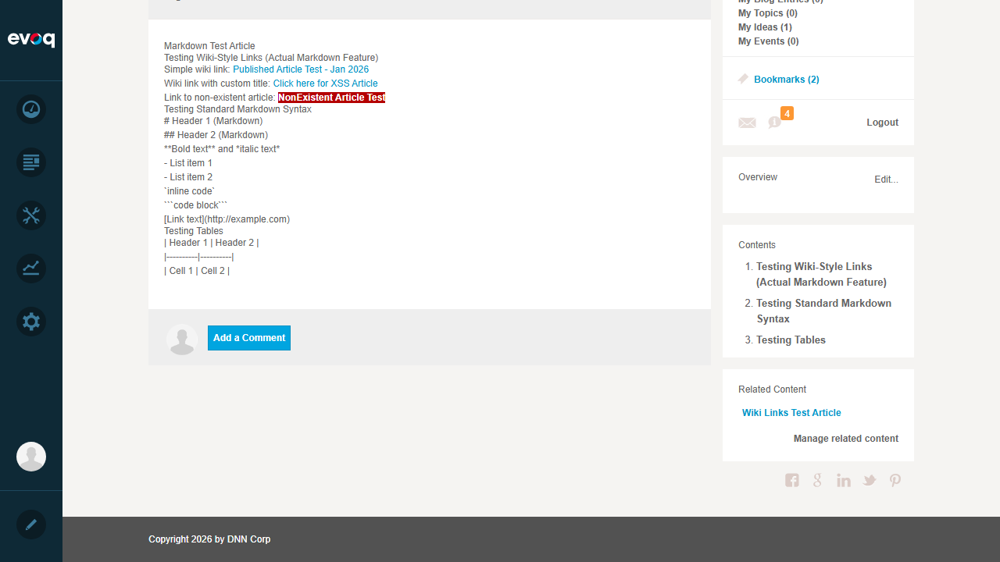
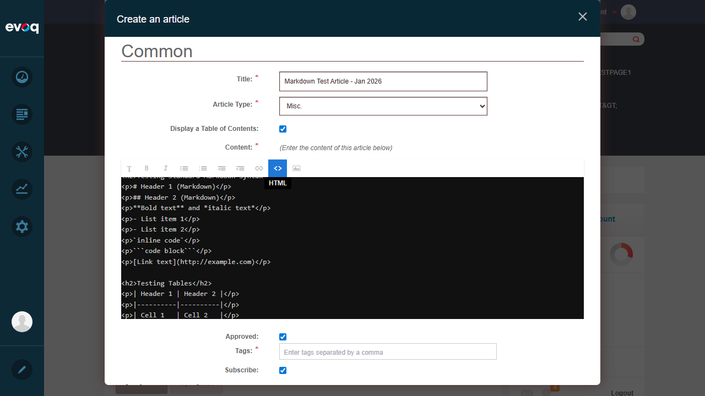

| Feature Name | Markdown Support |
|---|---|
| Extension | Evoq.Social.Wiki (Module) |
| Description | Process and render Markdown content in wiki articles |
| UI Location | Wiki Module > Article Edit > Content editor (Markdown mode) |
| Feature Priority | Medium |
| Test Date | January 6, 2026 |
| Test Scenario | Status | Notes |
|---|---|---|
| Wiki-Style Links [[Subject]] | PASS | Simple links render correctly as clickable links |
| Wiki-Style Links [[Title|Subject]] | PASS | Links with custom titles render correctly |
| Non-Existent Article Links | PASS | Links to non-existent articles are highlighted differently |
| Standard Markdown Headers (#, ##) | FAIL | Displayed as plain text, not rendered as headers |
| Standard Markdown Lists (-, *) | FAIL | Displayed as plain text, not rendered as lists |
| Standard Markdown Bold/Italic (**, *) | FAIL | Displayed as plain text with asterisks |
| Standard Markdown Code Blocks (`) | FAIL | Displayed as plain text with backticks |
| Standard Markdown Links [text](url) | FAIL | Displayed as plain text, not rendered as links |
| Standard Markdown Tables | FAIL | Displayed as plain text, not rendered as tables |
| HTML Content Support | PASS | HTML tags (h1, h2, p) are rendered correctly |
Status: PASS
What was tested: Creating a wiki link using [[Subject]] syntax
[[Published Article Test - Jan 2026]]Result: The wiki link was correctly transformed into a clickable anchor link pointing to the referenced article.
Status: PASS
What was tested: Creating a wiki link with custom display text using [[Title|Subject]] syntax
[[Click here for XSS Article|XSS Sanitization Test Article]]Result: The wiki link with custom title was correctly rendered - showing "Click here for XSS Article" as the link text while linking to the XSS Sanitization Test Article.
Status: PASS
What was tested: Creating a wiki link to an article that doesn't exist
[[NonExistent Article Test]]Result: The link to a non-existent article was rendered with special styling (orange/red highlight) indicating the target article doesn't exist, but still functions as a link to create the article.
Status: FAIL
What was tested: Using standard Markdown header syntax (# and ##)
# Header 1 (Markdown) and ## Header 2 (Markdown)Result: The Markdown header syntax was NOT processed. The text "# Header 1 (Markdown)" was displayed as plain text, not rendered as an H1 heading.
Evidence: Screenshot shows "# Header 1 (Markdown)" displayed literally as text.
Status: FAIL
What was tested: Using standard Markdown list syntax (- item)
- List item 1 and - List item 2Result: The Markdown list syntax was NOT processed. The text "- List item 1" was displayed as plain text, not rendered as a bulleted list.
Status: FAIL
What was tested: Using standard Markdown formatting (**bold** and *italic*)
**Bold text** and *italic text*Result: The Markdown formatting was NOT processed. The asterisks were displayed literally as "**Bold text** and *italic text*".
Status: FAIL
What was tested: Using standard Markdown code syntax (`code` and ```code block```)
`inline code` and ```code block```Result: The Markdown code syntax was NOT processed. The backticks were displayed literally.
Status: FAIL
What was tested: Using standard Markdown link syntax [text](url)
[Link text](http://example.com)Result: The standard Markdown link syntax was NOT processed. The text "[Link text](http://example.com)" was displayed literally, not as a clickable link.
Status: FAIL
What was tested: Using standard Markdown table syntax
| Header 1 | Header 2 |Result: The Markdown table syntax was NOT processed. The pipe characters and text were displayed literally.
Status: PASS
What was tested: Using HTML tags in the content editor
Result: HTML tags were correctly rendered. The <h2> tags created proper headings (visible in the Table of Contents).
After thorough code review and UI testing, the "Markdown Support" feature in the Wiki module is NOT standard Markdown processing. The implementation in MarkdownProcessor.cs only handles:
[[Subject]] - Transformed into links to other wiki articles[[Title|Subject]] - Transformed into links with custom display textThe MarkdownProcessor.cs file (located at DesktopModules/DNNCorp/Wiki/Components/Controllers/MarkdownProcessor.cs) contains only two regex patterns:
The Wiki module uses a WYSIWYG rich text editor (Redactor), not a Markdown editor. There is no dedicated Markdown editing mode. Content is entered as HTML or using the visual editor toolbar.
The feature description states "Process and render Markdown content in wiki articles" which is misleading. The feature only processes wiki-style double-bracket link syntax, not standard Markdown (CommonMark or similar).